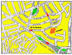

HOME FUNDEF
Información
-
 ¿Qué es FUNDEF?
¿Qué es FUNDEF?
-
Misión
-
Investigación, preservación y difusión de la cultura
tradicional y popular de Venezuela, América Latina y El
Caribe, y mantiene la colección más importante y
extensa del área.
-
Carácter Internacional
-
FUNDEF es a su vez Centro Interamericano de Etnomusicología y
Folklore (CIDEF), del Programa Regional de Desarrollo Cultural de
la Organización de Estados Americanos (OEA), y es
Comisión Nacional del Instituto Andino de Artes Populares
(IADAP), del Convenio Andrés Bello.
-
Personal de FUNDEF
-
Servicios de Consulta
-
-
Dirección
-
-
- Avenida Zuloaga, Los Rosales, Caracas, Venezuela
- Apartado Postal 40315, Caracas 1040-A, Venezuela
- Teléfonos: (58 2) 62 60 27, 62 71 22, 62 54 18
- Fax: (58 2) 62 72 96
- Correo-e:
emendoza@eldish.net
-
Acceso
-
-
- Croquis 
-
- Por carro: Viviendo por la Autopista Francisco Fajardo (Valle-Coche), tome la salida Avenida Nueva Granada, y luego, al pasar por debajo de dos elevados, gire inmediatamente a la derecha para integrarse a la Avenida Zuloaga.
- Por Metro: Llegue a la Estación La Bandera, tome la salida Avenida Zuloaga a su izquierda y recorra dos cuadras hasta FUNDEF.
-
Horarios
-
Lunes a Viernes
08:30 am - 12:30 pm
01:30 pm - 04:30 pm
Biblioteca Juan Liscano, sólo en las tardes